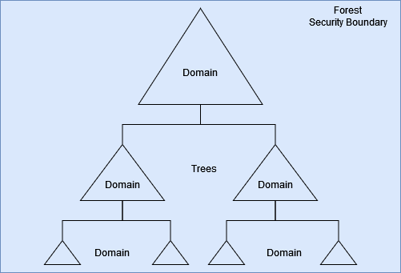
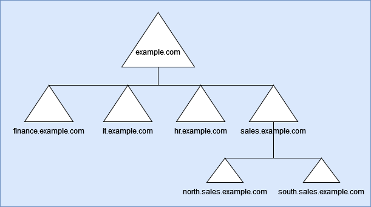
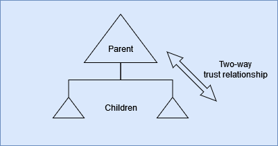

Introduction to Active Directory
Prologue
Hello there! Welcome to the first post in the Active Directory series, this post talks about AD in brief and does not go in detail at all. The objective of this post is to have a starting point in the series of AD related posts and can assist a person in understanding what AD is in general before learning about either attacks or defenses in AD. With that being said, let’s get started.
Active Directory Overview
Active Directory (AD) or as Microsoft calls it Active Directory Domain Services (AD DS) is a directory service which holds all the information about the environement and supports the network and its users in various forms. Think of it as a yellow pages book but for the organizations’ network. It holds different kinds of information about the organization such as users, groups, computers, access control lists, passwords of the users, and other supporting information.
In essence, AD is a centralized database which provides information via Lightweight Directory Access Protocol (LDAP) and is the backbone of many dependant applications/ services which accesses this information via LDAP.
Attributes of an Active Directory environment: Schema In order to store and manage the information about various objects in the AD, there is a definition or a set of rules that are defined according to which the data must be loaded against any object in the environment.
Global catalog As the name suggests, this consist of information about any object in the domain, and is available “globally”. This means that a user can access information regardless in which domain the data resides (within the forest, by default)
Querying and index mechanism For an AD to function and provide support to its’ dependant applications (like Kerberos or DNS), it is essential that they as well as the users can query information that is present and perform their necessary activities.
Replication In an AD, there are usually more than one Domain Controllers. Best practice suggets that you should have at least 2 in your forest. In order for a DC to maintain a complete copy of all the required information, the replication service assist them in doing so. If any change is made in either of the DCs, the other DC performs replication to obtain this new information and stays up-to-date.
Active Directory Structure
Let’s understand the structure of an Active Directory environment.

An AD environment is a tiered/hierarchical structure. In this, the Forest is the top most logical “container” and is considered as the security boundary. In an organization, there could be more than one forest, and each forest consist of one or more Trees. A tree is a “container” for one or more Domains in the AD.
An AD environment follows a parent-child relationship. This makes Forest as the parent to Trees, which individually are a parent to their respective Domains.

We can take the example of URLs to understand this better. Let’s say the Forest is called example.com. In the organization you have different departments, and so you decided to make a container for them to work within. These containers, or Trees, would look like - sales.example.com, hr.example.com, finance.example.com, etc. Taking sales Tree, the Domains within it would look like north.sales.example.com, south.sales.example.com, etc.
AD leverages the same thing as above to label domains in different levels of the forest.
Trust
As mentioned before, a parent-child relationship is followed in an AD environment.

This means that within a forest, there is an inherent and transitive two-way trust relationship present between the top most node (DC of the top most domain) to the bottom most node of the forest.
This inherent trust only exists within the forest, and not between forests. A forest acts as a perimeter with the AD, and this is known as the security boundary, where objects from one forest can not access resources/ information from another forest or vice versa by default.
In order to operate between multiple forests, explicit trust needs to be established and it is necessary to specify whether this trust is a two-way or one-way trust relationship.
Fin
I hope this provided a base level understanding regarding AD. The topics touched over here would be expanded upon if and when required. In you have any suggestions, queries, or found a mistake, please feel free to contact me.
Take care and keep hacking!
Would like to keep reading? Read the next post - Introduction to Kerberos